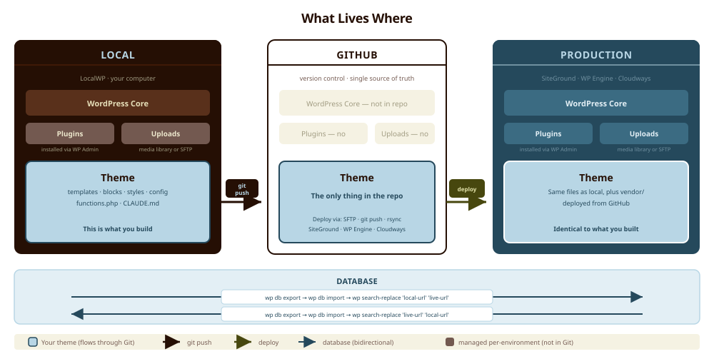

The Modern WordPress Stack for Marketers and Founders
A comprehensive, hands-on guide to building fast, maintainable WordPress sites with Timber, Twig, and Tailwind CSS. No developer required. Built from three real migrations, managed entirely with Claude Code.
Who This Guide Is For
This guide is for technically minded marketers at small and medium companies, and technically minded founders at early-stage startups. You are comfortable in a terminal. You have opinions about your website. And you are tired of being dependent on developers or page builder plugins to make changes to your own site.
You do not need to be a developer to follow this guide. You need to be willing to open a code editor, run a few terminal commands, and learn a templating language that reads like English. If you can write a marketing email, you can write a Twig template.
That said, if you are a developer, everything here will still apply. The architecture is clean, the tooling is standard, and the patterns scale. You will just move faster through the setup sections.
A computer (Mac or Windows), a web browser, a willingness to use the terminal, and a Claude Code subscription. We will walk you through installing everything else.
What You'll Build
By the end of this guide, you will have a complete WordPress site running a custom theme built on Timber (PHP/Twig bridge), Twig (clean templating), and Tailwind CSS (utility-first styling). Your site will be:
- Fast. No page builder bloat. Tailwind compiles to a tiny CSS file. Timber renders server-side with no JavaScript overhead.
- Maintainable. Twig templates read like HTML with variables. You can make changes confidently, even months later, because the code is self-documenting.
- Portable. Your theme lives in a GitHub repository. Deploy to SiteGround, WP Engine, or Cloudways with a single push. Switch hosts without rebuilding anything.
- AI-friendly. Claude Code can read, write, and debug Twig + Tailwind fluently. Your AI co-pilot understands every file in the project.
The guide covers the full lifecycle: choosing a host, setting up local development, building the theme from scratch, handling custom fields and content blocks, migrating from Elementor or a headless CMS, deploying to production, and maintaining the site long-term with Claude Code as your co-pilot.
Ready to build? Start here.
If you want to understand the full picture, keep reading. If you want to start building right now, here is what to do. The GitHub repo contains a working starter theme, two companion files optimized for Claude Code, and this guide.
Clone the repo and copy the starter theme into your LocalWP site.
git clone https://github.com/acorncmo/wp-stack-guide.git
cp -r wp-stack-guide/starter-theme/ \
~/Local\ Sites/your-site/app/public/wp-content/themes/your-theme/Open CLAUDE.md in the theme directory and customize it. Replace every bracketed placeholder with your project's details: site name, brand colors, page list, hosting choice. This is the file that makes Claude Code effective across sessions. A generic one is barely useful. A customized one turns Claude Code from assistant to co-pilot.
Start a Claude Code session in your theme directory.
cd ~/Local\ Sites/your-site/app/public/wp-content/themes/your-theme/
claudeThen tell it: "Read CLAUDE.md and theme-scaffold.md. I want to set up this theme for [my site]. Walk me through the setup."
Claude Code will install Composer dependencies, compile Tailwind, and walk you through activating the theme. From there, you build.
After initial setup, every subsequent session starts with: "Read CLAUDE.md. Here is what I want to work on today." The full guide below explains every decision behind this starter kit.
How It All Fits Together
Before diving into the details, here is the big picture. Three environments, connected by Git and WP-CLI. Your theme is the only thing that flows through version control. The database and media library are managed separately on each environment.

The key insight: your theme is the only custom code. WordPress core and plugins are installed and updated through the WordPress admin on each environment independently. The database contains your content and settings, and migrates via WP-CLI export/import with URL search-replace. Your media library (uploads) either migrates via SFTP or is managed directly on the production server. The theme, the thing you build, is a small, version-controlled directory that deploys cleanly to any WordPress host.
The WordPress Landscape in 2026
WordPress powers roughly 43% of the web. That number has not changed much in five years, which tells you something important: for all the noise about headless CMS platforms, Jamstack, and AI-generated sites, WordPress remains the pragmatic choice for most businesses. The plugin ecosystem is unmatched. The hosting options are abundant and affordable. Content editors already know how to use it.
But WordPress has two failure modes that catch most small teams:
Failure mode one: page builder sprawl. You install Elementor or Divi because you want to build pages visually, without writing code. It works at first. Then the site gets slow. The markup is bloated with nested divs and inline styles. Every "simple" change requires navigating a drag-and-drop interface that has become more complex than code would have been. You are locked into the builder's ecosystem, and your site's performance suffers with every plugin update.
Failure mode two: developer dependency. You hire a developer (or agency) to build a custom theme. The code is clean, the site is fast. Then the developer moves on. You need to change a headline, add a section, update a page. You cannot do it yourself because the theme was built with raw PHP that you cannot read, and the developer's patterns are undocumented. You are back to hiring someone for every small change.
The Timber + Twig + Tailwind stack solves both of these problems. Your templates are readable. Your CSS is utility-based and self-documenting. And Claude Code can work with every file in the project, which means you always have a co-pilot who understands the codebase.
Headless CMS: The Appeal and the Reality
If you have spent any time researching modern web architecture, you have heard the case for headless CMS platforms like Sanity, Contentful, or Strapi. The pitch is compelling: your content lives in a clean, structured API. Your frontend is a separate application built with React, Next.js, or whatever framework you prefer. The content model is beautiful. The developer experience is excellent.
We have been inside that world. We migrated a real client site from Sanity CMS back to WordPress, and we have strong opinions about when headless makes sense and when it is expensive overkill.
What headless gets right: The content model is genuinely better. Structured data, typed fields, portable content. If you are building a product with content that needs to appear across multiple platforms (web, mobile app, kiosk, API), headless is the right call.
What headless costs you: Two codebases instead of one. A frontend framework that requires a developer to maintain. Hosting complexity (you need both a CMS host and a frontend host). Loss of the entire WordPress plugin ecosystem. No visual content editing without building a custom preview system. And the biggest hidden cost: when something breaks at 10pm, you need a developer who understands both the CMS and the frontend framework to fix it.
For a marketing site, a brochure site, or a content-driven site at a small company, headless is almost always more architecture than the problem requires. You are solving a content delivery problem that you do not have, and paying for it in complexity.
When we migrated a client site from Sanity + Next.js to WordPress on Cloudways, the biggest surprise was not the content migration itself (though that was involved: a 7-step Node.js pipeline with GROQ exports, PortableText-to-HTML conversion, and a two-pass reference resolver). It was how much simpler everything became afterward. One codebase. One hosting account. One deployment target. The team could make content changes without waiting for a developer to deploy the frontend. The structured content model we lost from Sanity was replaced by ACF Pro Flexible Content fields that gave the content team a page builder experience inside the WordPress editor, with 25+ reusable modules, each backed by a Twig template.
Page Builders: The Trap and the Exit
Elementor, Divi, and WPBakery all promise the same thing: build beautiful pages without writing code. And they deliver on that promise, for about six months. Then the costs start compounding.
We have migrated two production sites from Elementor to custom Timber themes. Here is what we found:
Markup bloat. A simple hero section in Elementor generates 15+ nested <div> elements with inline styles. The same section in Twig is 8 lines of clean HTML with Tailwind classes. This is not an aesthetic preference. It directly affects page load time, Core Web Vitals scores, and SEO.
CSS conflicts. Elementor ships its own CSS framework that competes with your theme styles, any custom CSS you add, and other plugins. Debugging a visual inconsistency means tracing through multiple layers of specificity. In a Tailwind theme, what you see in the class list is what renders. There is one source of truth.
Content lock-in. This is the real trap. Elementor stores your page content as a JSON blob in the _elementor_data postmeta field. Your actual content, the words you wrote, are wrapped in a proprietary data structure. If you deactivate Elementor, your pages display raw shortcodes or nothing at all. There is no "export to HTML" button that preserves your layout.
The exit path is manual. In both Elementor migrations we have done, the content had to be recreated by hand. We inspected each Elementor page, extracted the text and images, and rebuilt every section as a Twig template with Tailwind classes. No automated converter worked reliably. This is the price of the page builder promise: when you leave, you start over.
Do not deactivate Elementor before you have rebuilt every page. Keep the old theme active while you build the new one in a local development environment. Use the live Elementor site as your visual reference and content source. Only switch themes after every page has been recreated and visually QA'd against the original.
Timber + Twig + Tailwind: The Best of Both Worlds
Here is what this stack gives you, and why it is the right answer for small teams who want professional results without developer dependency:
Timber is a PHP library that adds a proper separation of concerns to WordPress. Instead of writing PHP spaghetti in your template files (mixing HTML, database queries, and logic in the same file), Timber lets you prepare your data in PHP and render it in Twig. Your PHP files become 3-line dispatchers. Your Twig files become clean, readable templates.
Twig is the templating language Timber uses. If you can read HTML, you can read Twig. Variables look like {{ post.title }}. Loops look like {% for post in posts %}. Conditionals look like {% if post.thumbnail %}. There is no PHP syntax to learn. The templates are logic-light by design, which means they stay readable even as the site grows.
Tailwind CSS is a utility-first CSS framework. Instead of writing custom CSS classes and maintaining a separate stylesheet, you apply styles directly in your HTML with utility classes like bg-brown-500 text-white py-12 px-6. This sounds messy until you try it. In practice, it means every element's styling is visible right where the element is defined. No hunting through stylesheets. No specificity wars. And in production, Tailwind compiles to a tiny CSS file that includes only the classes you actually used.
The combination gives you WordPress's content editing and plugin ecosystem, with code that is clean enough for Claude Code to read, write, and maintain. That last point matters more than anything else in this stack. A technically minded marketer with Claude Code can build, modify, and maintain a Timber/Twig/Tailwind site at a level that previously required a frontend developer.
Where Claude Code Fits
Claude Code is a terminal-based AI coding assistant from Anthropic. It runs in your terminal, reads your project files, and can write, modify, and debug code with full awareness of your codebase. It is not a chatbot that generates code snippets. It is an agent that understands your file structure, your dependencies, and your patterns.
This stack is particularly well-suited to Claude Code for three reasons:
Twig is highly structured. Templates follow predictable patterns. Claude Code can scaffold a new page template by following the conventions already established in your existing templates. Once you have base.twig, a nav partial, and one page template, Claude Code can build the rest.
Tailwind is self-documenting. Because styles are expressed as utility classes right in the HTML, Claude Code can see exactly what something looks like by reading the template. It does not need to cross-reference a separate CSS file. And it can apply styles by describing what it wants: "a full-width section with a dark brown background, white text, and generous vertical padding" translates directly to Tailwind classes.
The context file pattern works. We maintain a context.md file in every project that tells Claude Code what the project is, what tech stack it uses, where files live, and what the current status is. This means every session starts with full project awareness, even if weeks have passed since the last session. Section 12 covers this workflow in detail.
Can: Scaffold templates, write Tailwind classes, configure Timber, set up build tools, debug Twig errors, explain what code does, help with Git workflows, write deployment scripts.
Cannot: Make design decisions for you, replace visual QA (you still need to look at the site in a browser), manage your hosting dashboard, or automatically deploy without your review.
Choosing Your WordPress Host
Your hosting choice affects deployment workflow, performance, cost, and how much technical overhead you carry. For a Timber + Twig + Tailwind site, here is what matters:
- PHP 8.1+ — Timber 2.x requires PHP 8.0 at minimum. Run 8.1 or 8.2 for best performance.
- SSH access — Required for WP-CLI commands and deployment scripts. Non-negotiable.
- Staging environments — You should never deploy directly to production without testing. A one-click staging environment saves hours.
- Git integration — Nice to have. WP Engine offers native Git push-to-deploy. Others require manual or scripted deployment.
- Caching layer — Every host handles caching differently. Your Timber templates render server-side on every request unless cached. The host's caching layer determines how much that matters for performance.
- Price-to-value at your scale — A brochure site for a 20-person company does not need enterprise hosting. But it does need reliability and good support.
SiteGround
Managed shared and cloud hosting with strong WordPress integration. SiteGround is the most accessible option for small teams deploying their first custom theme. The Site Tools dashboard is clean and well-designed, and the SG Optimizer plugin handles caching, image optimization, and performance tuning in one place.
Best for: First deployments, low-to-medium traffic brochure sites, budget-conscious teams who want reliable managed hosting without enterprise pricing.
Deploy method: SFTP upload or SSH deploy script. No native Git push.
WP Engine
Premium managed WordPress hosting built for professional sites. WP Engine is the choice when you want deployment via Git, rock-solid staging, and enterprise-grade caching (EverCache) out of the box. The higher price buys you a significantly better deployment workflow and peace of mind.
wp-config.php is partially managed by WP Engine, so some configuration requires their dashboard. No email hosting included. The file system is read-only in some directories.Best for: Client sites, teams who want Git-based deployment, anyone who values "it just works" caching and staging. Worth the premium if deployment workflow matters to you.
Deploy method: Git push to WP Engine remote. Also supports SFTP and LocalWP Connect push.
Cloudways
Managed cloud hosting that sits on top of infrastructure providers like DigitalOcean, AWS, or Vultr. Cloudways gives you more control over your server than SiteGround or WP Engine, with a dashboard that abstracts away the hard parts of server management. It is the choice for teams that want cloud-grade performance without managing a VPS directly.
Best for: Performance-focused teams, sites with growing traffic, anyone who wants cloud infrastructure without managing it directly. Good middle ground between SiteGround's simplicity and running your own server.
Deploy method: SFTP, SSH script, or GitHub integration via Cloudways dashboard.
Side-by-Side Comparison
| Feature | SiteGround | WP Engine | Cloudways |
|---|---|---|---|
| Starting price | ~$15/mo | ~$20/mo | ~$14/mo |
| Staging environment | GrowBig+ plans | All plans | All plans (clone) |
| Native Git deploy | No | Yes (push-to-deploy) | GitHub integration |
| SSH access | Yes (key-based, custom port) | Yes | Yes |
| Caching | SG Optimizer | EverCache | Varnish + Breeze |
| PHP 8.1+ support | Yes | Yes | Yes |
| Free SSL | Yes (Let's Encrypt) | Yes | Yes (Let's Encrypt) |
| Email hosting | Included | Not included | Not included |
| LocalWP Connect | No | Yes (push/pull) | No |
| Best for this stack | Budget-first, simple deploys | Git workflow, client sites | Performance, flexibility |
Setting Up Your Local Development Environment
Local development means running WordPress on your own computer. You build, test, and break things locally, where mistakes cost nothing. Then you deploy to your live site only when everything works.
This is not optional. Building directly on a live site is how pages go blank at 3pm on a Tuesday. Every professional WordPress workflow starts local.
Installing LocalWP
LocalWP (formerly Local by Flywheel) is the easiest way to run WordPress on your machine. It handles PHP, MySQL, Nginx, and SSL automatically. You do not need to install any of those separately.
Download LocalWP from localwp.com. Choose the Mac or Windows installer. Run it. Accept the defaults during installation.
Create a new site. Click the + button in the bottom-left corner. Give your site a name (this becomes the local URL, e.g., my-site.local). Choose "Preferred" for the environment settings, which gives you a current PHP version and MySQL. Set your WordPress admin username and password.
Start the site. LocalWP will download WordPress, configure the database, and spin up a local server. This takes about 60 seconds. When it is done, you will see your site listed in the LocalWP dashboard with a green "Running" indicator.
Know where your files live. This is important for everything that follows. LocalWP stores sites in a predictable directory:
- Mac:
~/Local Sites/your-site-name/app/public/ - Windows:
C:\Users\you\Local Sites\your-site-name\app\public\
Your theme will live at: .../app/public/wp-content/themes/your-theme/
Open the WP admin. Click "WP Admin" in LocalWP to open your site's admin dashboard. Bookmark this. You will use it constantly.
Timber 2.x requires PHP 8.0+. When creating your LocalWP site, make sure the PHP version is 8.1 or higher. You can check this in LocalWP under the site's settings. If your host runs a different PHP version, match it locally to avoid surprises during deployment.
Key LocalWP Features for This Workflow
One-click admin login. Click the "WP Admin" button and you are logged in. No typing passwords during development.
Live Link. Share your local site with a temporary public URL. Useful for showing work to a client or teammate without deploying. Click "Enable" under Live Link in the LocalWP dashboard.
SSL. LocalWP can generate a trusted SSL certificate for your local site. Click "Trust" under SSL in the site settings. This prevents mixed-content warnings when developing with HTTPS.
Mailhog. LocalWP intercepts outgoing emails from your local WordPress and shows them in a built-in mail client. Essential for testing contact forms without actually sending emails.
Connect to WP Engine. If you use WP Engine, LocalWP has a built-in integration that lets you push and pull your database and files between local and your WP Engine environment. This is the fastest path to deployment if you are on WP Engine.
Other Local Development Options
LocalWP is the recommendation for this guide because it requires zero configuration and handles the most common WordPress development needs out of the box. But there are alternatives:
DDEV is a Docker-based local development tool. It is more configurable than LocalWP and better suited for teams that need to match complex server configurations exactly. The tradeoff is that it requires Docker Desktop to be installed and running, and the learning curve is steeper. If you are already comfortable with Docker, DDEV is excellent.
DevKinsta is Kinsta's local development tool. Similar to LocalWP in UX, but optimized for deploying to Kinsta hosting. If you are a Kinsta customer, it is worth a look.
Docker Compose gives you full manual control over your local server stack. Skip this unless you have a specific reason to manage your own containers. For a marketing site, it is complexity without benefit.
WP-CLI: The WordPress Command Line
WP-CLI lets you manage WordPress from the terminal. You will use it for installing plugins, exporting/importing databases, and running search-replace on URLs when migrating between environments.
Installing WP-CLI on Mac:
curl -O https://raw.githubusercontent.com/wp-cli/builds/gh-pages/phar/wp-cli.phar
chmod +x wp-cli.phar
sudo mv wp-cli.phar /usr/local/bin/wp
wp --infoInstalling WP-CLI on Windows: Download wp-cli.phar from the WP-CLI website, place it in a directory in your PATH, and create a wp.bat file that runs php wp-cli.phar %*.
Commands you will use often:
# Install and activate a plugin
wp plugin install timber-library --activate
# Export the database
wp db export backup.sql
# Import a database
wp db import backup.sql
# Search-replace URLs (critical for migration)
wp search-replace 'http://my-site.local' 'https://mysite.com' --dry-run
wp search-replace 'http://my-site.local' 'https://mysite.com'
# Flush all caches
wp cache flush
# Regenerate image thumbnails
wp media regenerate --yesThe --dry-run flag shows you what would change without actually changing it. Run this first, review the output, and only then run the real command. URL search-replace touches every row in your database. Getting it wrong can break your site in ways that are not obvious immediately.
Version Control with GitHub
Version control is not just for teams. Even if you are the only person working on your site, Git gives you three things you cannot get any other way:
Rollback. Every commit is a snapshot. If a change breaks something, you can revert to the last working state in seconds. Without Git, "undo" means remembering what you changed and manually reversing it.
Context for Claude Code. Claude Code works best when it can see your entire project structure. A Git repository with a clear history and a context file gives Claude Code everything it needs to understand your codebase and make changes that follow your existing patterns.
Deployment. Once your theme is in a GitHub repository, deploying to your host becomes a push command (or an automated pipeline). No more uploading files via FTP and hoping you did not miss one.
Setting Up GitHub
Create a GitHub account at github.com if you do not have one. The free plan is sufficient.
Install Git. On Mac, open Terminal and type git --version. If Git is not installed, macOS will prompt you to install the Xcode Command Line Tools. On Windows, download Git from git-scm.com.
Install GitHub Desktop (recommended for non-developers) from desktop.github.com. This gives you a visual interface for commits, pushes, and branch management. The terminal works too, but GitHub Desktop removes friction.
Configure your Git identity:
git config --global user.name "Your Name"
git config --global user.email "you@example.com"Repository Strategy
For most teams using this stack, the recommended approach is a theme-only repository. Your Git repo contains just your theme directory. WordPress core, plugins, and uploads are not tracked.
Why? WordPress core and plugins are managed by WordPress itself (updates via the admin dashboard). Tracking them in Git creates merge conflicts, bloats the repo, and adds complexity without benefit. Your theme is the custom code. That is what belongs in version control.
The .gitignore File
Your .gitignore tells Git which files to skip. For a theme-only repo:
# Dependencies (installed via npm/composer, not committed)
node_modules/
vendor/
# Compiled CSS (rebuild on deploy or commit — your choice)
# assets/css/app.css
# Environment and OS files
.env
.DS_Store
Thumbs.db
*.log
# IDE files
.vscode/
.idea/There are two valid approaches. Option A: commit assets/css/app.css so your theme is deploy-ready as-is. No build step needed on the server. This is simpler and what we recommend for most teams. Option B: build on deploy via a GitHub Action that runs npm run build. Cleaner repo, but more complex deployment. Start with Option A. Move to B when you outgrow it.
Connecting Your Local Theme to GitHub
# Navigate to your theme directory
cd ~/Local\ Sites/my-site/app/public/wp-content/themes/my-theme/
# Initialize a Git repository
git init
# Add all files
git add .
# First commit
git commit -m "Initial theme scaffold"
# Create the repo on GitHub (via github.com or GitHub Desktop)
# Then connect your local repo to it:
git remote add origin https://github.com/your-username/my-theme.git
git push -u origin mainDaily Git Workflow
The loop is simple: make changes locally, test them in your browser, commit the working changes, push to GitHub. Repeat.
# See what changed
git status
# Stage specific files
git add templates/front-page.twig tailwind.config.js
# Commit with a meaningful message
git commit -m "Add hero section to front page with brand colors"
# Push to GitHub
git pushCommit often. Commit when something works. Write messages that describe what changed and why. Your future self (and Claude Code) will thank you.
Building Your Theme: The Foundation
Here is the complete directory structure of a production Timber + Twig + Tailwind theme. This is the exact structure from a real production project.
Installing Timber via Composer
Composer is PHP's package manager. You use it to install Timber (and its dependency, Twig) into your theme.
Install Composer. On Mac: brew install composer (if you use Homebrew) or download the installer from getcomposer.org. On Windows: download and run the Composer installer from the same site.
Navigate to your theme directory in the terminal:
cd ~/Local\ Sites/my-site/app/public/wp-content/themes/my-theme/Initialize Composer and install Timber:
composer init --name="my-org/my-theme" --type="wordpress-theme" --no-interaction
composer require timber/timber:^2.0This creates composer.json, composer.lock, and a vendor/ directory containing Timber and Twig.
Setting Up Tailwind CSS
The simplest build setup uses the Tailwind CLI directly. No Vite. No webpack. No PostCSS configuration. Two npm scripts and you are done.
Initialize npm and install Tailwind:
npm init -y
npm install -D tailwindcssCreate the Tailwind source file at src/css/app.css:
@tailwind base;
@tailwind components;
@tailwind utilities;Update package.json with build scripts:
{
"name": "my-theme",
"version": "1.0.0",
"scripts": {
"dev": "npx tailwindcss -i ./src/css/app.css -o ./assets/css/app.css --watch",
"build": "npx tailwindcss -i ./src/css/app.css -o ./assets/css/app.css --minify"
},
"devDependencies": {
"tailwindcss": "^3.4.0"
}
}Run the dev watcher while you work:
npm run devThis watches your templates for changes and recompiles the CSS automatically. Leave this running in a terminal tab while you develop. When you are ready to deploy, run npm run build to produce a minified production CSS file.
If you add a new Tailwind class to a Twig template and the style does not appear, check that npm run dev is running. The CSS only includes classes that Tailwind finds in your scanned files. This is easy to forget, and "the style is not applying" is almost always because the build is not running.
Tailwind Config: Your Design Tokens
The tailwind.config.js file is where your brand's design system lives in code. Colors, fonts, type scale, spacing, breakpoints. Here is an example config showing the structure. Replace the colors, fonts, and type scale with your own brand tokens:
/** @type {import('tailwindcss').Config} */
module.exports = {
content: [
'./templates/**/*.twig',
'./blocks/**/*.php',
'./src/**/*.js',
],
theme: {
extend: {
colors: {
brown: {
500: '#250F04',
400: '#3F1906',
300: '#59301B',
200: '#735950',
100: '#E5C7B8',
},
blue: {
500: '#25495C',
400: '#7090A0',
300: '#B8D6E5',
200: '#CDE2ED',
100: '#E3EFF5',
},
gold: {
500: '#5C594A',
400: '#A09B81',
300: '#E5DEB8',
200: '#EDE8CD',
100: '#F5F2E3',
},
olive: {
500: '#47470E',
400: '#7D7D19',
300: '#B2B224',
200: '#C9C966',
100: '#E0E0A7',
},
},
fontFamily: {
display: ['"Humble Belongs"', 'serif'],
sans: ['"Public Sans"', 'sans-serif'],
},
fontSize: {
'title': ['90px', { lineHeight: '100px' }],
'quote': ['56px', { lineHeight: '100px' }],
'h1': ['64px', { lineHeight: '100px' }],
'h2': ['48px', { lineHeight: '100px' }],
'h3': ['36px', { lineHeight: '110%' }],
'h4': ['24px', { lineHeight: '110%' }],
'subheading': ['18px', { lineHeight: '140%' }],
'body': ['14px', { lineHeight: '140%' }],
'caption': ['11px', { lineHeight: '130%' }],
},
screens: {
'sm': '480px',
'md': '768px',
'lg': '1025px',
'xl': '1440px',
},
},
},
plugins: [],
}The content array is critical. It tells Tailwind which files to scan for class names. If a class you are using does not appear in the compiled CSS, the most likely cause is that the file containing it is not listed here. In one of our builds, we initially forgot to include './blocks/**/*.php' in the content array. The Lazy Block PHP shims contain Tailwind class references (passed via the render helper), and those classes were silently dropped from the compiled CSS. Everything looked right in the templates, but the blocks rendered without styles. Adding the blocks directory to the content array fixed it immediately.
functions.php: The Core Setup
This is the most important PHP file in your theme. It initializes Timber, registers menus, enqueues your Tailwind CSS, and defines the global data available in every Twig template. Here is an annotated production example:
<?php
/**
* Theme functions — Timber + Twig + Tailwind
*/
// Load Timber via Composer autoload.
// This is the bridge between WordPress and Twig.
if ( ! file_exists( __DIR__ . '/vendor/autoload.php' ) ) {
wp_die( 'Timber not found. Run <code>composer install</code> in the theme directory.' );
}
require_once __DIR__ . '/vendor/autoload.php';
use Timber\Timber;
use Timber\Site;
// Initialize Timber. This must happen before anything else.
Timber::init();
/**
* Global context — data available in EVERY Twig template.
*
* Anything you add here can be used as {{ variable_name }} in any .twig file.
*/
add_filter( 'timber/context', function( $context ) {
$context['site'] = new Site();
$context['options'] = get_option( 'theme_site_content', [] );
// Navigation menus (registered below)
$context['nav_primary'] = Timber::get_menu( 'primary' );
$context['nav_footer'] = Timber::get_menu( 'footer' );
// Useful globals
$context['site_url'] = home_url();
$context['theme_uri'] = get_template_directory_uri();
return $context;
} );
/**
* Theme setup: menus, thumbnails, HTML5 support.
*/
add_action( 'after_setup_theme', function() {
register_nav_menus( [
'primary' => __( 'Primary Navigation', 'my-theme' ),
'footer' => __( 'Footer Navigation', 'my-theme' ),
] );
add_theme_support( 'post-thumbnails' );
add_theme_support( 'title-tag' );
add_theme_support( 'html5', [
'search-form', 'comment-form', 'comment-list',
'gallery', 'caption'
] );
} );
/**
* Enqueue styles and scripts.
*/
add_action( 'wp_enqueue_scripts', function() {
$theme_uri = get_template_directory_uri();
$version = wp_get_theme()->get( 'Version' );
// Tailwind compiled CSS
wp_enqueue_style( 'theme-styles',
$theme_uri . '/assets/css/app.css', [], $version
);
// Google Fonts (Public Sans)
wp_enqueue_style( 'public-sans',
'https://fonts.googleapis.com/css2?family=Public+Sans:ital,wght@0,100..900;1,100..900&display=swap',
[], null
);
} );
/**
* Tell Timber where to find Twig templates.
*/
add_filter( 'timber/locations', function( $paths ) {
$paths[] = get_template_directory() . '/templates';
return $paths;
} );
/** Allow SVG uploads. */
add_filter( 'upload_mimes', function( $mimes ) {
$mimes['svg'] = 'image/svg+xml';
return $mimes;
} );How Timber + Twig Works: The Mental Model
WordPress has a template hierarchy. When someone visits your homepage, WordPress looks for front-page.php. When they visit a blog post, it looks for single.php. This does not change with Timber.
What changes is what those PHP files do. Without Timber, front-page.php contains a mix of PHP, HTML, and WordPress function calls. With Timber, it becomes a 3-line dispatcher:
<?php
// front-page.php — dispatches to Twig template
$context = Timber::context();
$context['post'] = Timber::get_post();
Timber::render( 'front-page.twig', $context );That is it. Every PHP template file in a Timber theme looks like this. Three lines: get the context, add post-specific data, render the Twig template. The real work, the HTML structure, the layout, the Tailwind classes, happens in the .twig file.
The $context array is the data bridge between PHP and Twig. The global context (defined in functions.php) gives you site-wide data like menus and the site URL. Each PHP file adds page-specific data. In the Twig template, everything in the context is available as a variable.
{{ variable }} outputs a value. {% if condition %} ... {% endif %} is a conditional. {% for item in items %} ... {% endfor %} is a loop. {% include 'partials/nav.twig' %} includes another template. {% extends 'base.twig' %} inherits from a parent template. {# This is a comment #} is invisible in the output. That is 95% of what you will use.
Building Your Theme: Templates
base.twig is your master layout. Every page on your site extends it. It defines the HTML shell, includes the nav and footer, and provides a {% block content %} that page templates fill in.
<!DOCTYPE html>
<html {{ site.language_attributes }}>
<head>
<meta charset="{{ site.charset }}">
<meta name="viewport" content="width=device-width, initial-scale=1.0">
{{ function('wp_head') }}
{% block head_extra %}{% endblock %}
</head>
<body class="{{ function('body_class') }}">
{{ function('wp_body_open') }}
<div class="site-wrap">
{% include 'partials/nav.twig' %}
<main id="main">
{% block content %}{% endblock %}
</main>
{% include 'partials/footer.twig' %}
</div>
{{ function('wp_footer') }}
</body>
</html>Note the {{ function('wp_head') }} and {{ function('wp_footer') }} calls. These are Timber's way of calling WordPress functions from Twig. They output your enqueued CSS and JS, SEO plugin meta tags, analytics scripts, and anything else plugins hook into wp_head and wp_footer. Never remove these.
Navigation
The navigation partial receives the menu from the global context (nav_primary, which we set in functions.php). Here is a real navigation with a responsive mobile menu:
{# partials/nav.twig #}
<header class="bg-brown-500 sticky top-0 z-50">
<nav class="container mx-auto flex items-center justify-between py-4 px-6">
{# Left: nav links (desktop) #}
<div class="hidden lg:flex items-center gap-8">
{% for item in nav_primary.items %}
<a href="{{ item.link }}"
class="text-white text-sm font-sans hover:text-blue-300 transition-colors
{{ item.current ? 'text-blue-300' : '' }}">
{{ item.title }}
</a>
{% endfor %}
</div>
{# Center: logo #}
<a href="{{ site_url }}" class="absolute left-1/2 -translate-x-1/2">
<img src="{{ theme_uri }}/assets/images/logo-header.svg"
alt="Site logo" class="h-10">
</a>
{# Right: CTA button (desktop) #}
<div class="hidden lg:block">
<a href="{{ site_url }}/contact/"
class="bg-white text-brown-500 font-sans text-sm font-semibold
px-6 py-2 rounded-full hover:bg-blue-300 transition-colors">
Contact us
</a>
</div>
{# Mobile hamburger #}
<button id="mobile-toggle" class="lg:hidden text-white text-2xl">
☰
</button>
</nav>
{# Mobile menu (hidden by default) #}
<div id="mobile-menu" class="hidden lg:hidden bg-brown-400 px-6 pb-4">
{% for item in nav_primary.items %}
<a href="{{ item.link }}"
class="block text-white text-sm py-2 border-b border-brown-300">
{{ item.title }}
</a>
{% endfor %}
<a href="{{ site_url }}/contact/"
class="block text-olive-300 text-sm font-semibold py-3 mt-2">
Contact us
</a>
</div>
</header>
<script>
document.getElementById('mobile-toggle').addEventListener('click', function() {
document.getElementById('mobile-menu').classList.toggle('hidden');
});
</script>Footer
The footer follows the same pattern. It receives its data from the global context and renders with Tailwind utility classes. Dynamic data (like the current year) uses Twig's built-in date filter:
<!-- Dynamic copyright year -->
<p>© {{ "now"|date("Y") }} {{ site.name }}</p>Page Templates
Every page template follows the same structure: extend base.twig, fill in the content block. The PHP dispatcher is always 3 lines.
Generic page (page.php / page.twig)
{# page.twig #}
{% extends 'base.twig' %}
{% block content %}
<article class="py-16 px-6 max-w-3xl mx-auto">
<h1 class="font-display text-h1 mb-8">{{ post.title }}</h1>
<div class="prose font-sans text-body">
{{ post.content }}
</div>
</article>
{% endblock %}{{ post.content }} renders whatever is in the WordPress block editor for that page. This is important: you do not have to rebuild every page as a custom template. Pages that use the block editor for content can use this generic template. Reserve custom page templates for pages with unique layouts (homepage, services page, contact page).
Blog archive (archive.php / archive.twig)
{# archive.twig #}
{% extends 'base.twig' %}
{% block content %}
<section class="py-16 px-6 max-w-5xl mx-auto">
<h1 class="font-display text-h2 mb-12">Blog</h1>
<div class="grid grid-cols-1 md:grid-cols-2 lg:grid-cols-3 gap-8">
{% for post in posts %}
<article class="border border-gold-200 rounded-2xl overflow-hidden">
{% if post.thumbnail %}
<img src="{{ post.thumbnail.src('medium_large') }}"
alt="{{ post.title }}"
class="w-full h-48 object-cover">
{% endif %}
<div class="p-6">
<h2 class="font-sans font-bold text-h4 mb-2">
<a href="{{ post.link }}" class="hover:text-blue-500">
{{ post.title }}
</a>
</h2>
<p class="text-body text-brown-200">
{{ post.preview.length(25).read_more('') }}
</p>
</div>
</article>
{% endfor %}
</div>
</section>
{% endblock %}Single post (single.php / single.twig)
{# single.twig #}
{% extends 'base.twig' %}
{% block content %}
<article>
<header class="bg-brown-500 text-white py-16 px-6">
<div class="max-w-3xl mx-auto">
<h1 class="font-display text-h1 mb-4">{{ post.title }}</h1>
<p class="text-blue-300 text-subheading">{{ post.preview.length(30) }}</p>
<div class="flex items-center gap-3 mt-8">
{% if post.author.avatar %}
<img src="{{ post.author.avatar.src }}" class="w-10 h-10 rounded-full">
{% endif %}
<div>
<p class="text-sm font-semibold">{{ post.author.name }}</p>
<p class="text-caption text-blue-400">{{ post.date }}</p>
</div>
</div>
</div>
</header>
<div class="py-12 px-6 max-w-3xl mx-auto prose font-sans text-body">
{{ post.content }}
</div>
</article>
{% endblock %}Custom Fields and Content Blocks
The WordPress block editor handles most content needs. But there are cases where you want structured, reusable content that goes beyond what the editor provides: a hero section with specific fields (eyebrow text, headline, CTA button, background style), a pricing card with a repeating list of features, or a testimonial block with author attribution.
For this stack, there are two excellent options: Lazy Blocks and ACF Pro. We have used both in production. Here is when each one shines.
Lazy Blocks
How Lazy Blocks connects to Twig
Lazy Blocks is a free WordPress plugin that lets you create custom Gutenberg blocks through the admin UI, with a visual field builder and the ability to render output through Twig templates. It is the fastest path from "I need a custom block" to "it is live on the page." In one of our production themes, Lazy Blocks powers three blocks: a hero section, a metrics bar, and a service pricing tier.
The key configuration is setting the output method to "Theme Template" in the Lazy Blocks editor. This tells Lazy Blocks to look for a PHP file at blocks/lazyblock-{slug}/block.php in your theme. That PHP file is a 1-line shim that hands off to your Twig template:
<?php
// blocks/lazyblock-hero-section/block.php
echo theme_block_render( 'hero-section', $attributes );The theme_block_render() helper (defined in inc/blocks.php) merges the block's field values into a Timber context and compiles the corresponding Twig template. Here is that helper:
<?php
// inc/blocks.php
function theme_block_render( $template, $attrs = [] ) {
$context = Timber::context();
$context['attrs'] = $attrs;
return Timber::compile( "blocks/{$template}.twig", $context );
}Then the Twig template receives everything through attrs:
{# templates/blocks/hero-section.twig #}
{% set bg_map = {
'brown': 'bg-brown-500 text-white',
'blue': 'bg-blue-300 text-brown-500',
'white': 'bg-white text-brown-500',
} %}
{% set bg_class = bg_map[attrs.bg_style] ?? 'bg-brown-500 text-white' %}
<section class="{{ bg_class }} relative overflow-hidden min-h-[540px] flex items-center">
<div class="container mx-auto relative z-10 text-center py-24">
{% if attrs.eyebrow %}
<p class="font-sans text-sm tracking-widest uppercase mb-4">
{{ attrs.eyebrow }}
</p>
{% endif %}
{% if attrs.headline %}
<h1 class="font-display text-title leading-none mb-8">
{{ attrs.headline }}
</h1>
{% endif %}
{% if attrs.cta_text and attrs.cta_url %}
<a href="{{ attrs.cta_url }}"
class="border rounded-full px-8 py-3 text-sm font-sans transition-colors">
{{ attrs.cta_text }}
</a>
{% endif %}
</div>
</section>Hyphens vs. underscores. Lazy Blocks auto-generates control names with hyphens (tier-name), but Twig templates expect underscores (tier_name). You must manually change every control name in the Lazy Blocks UI. Define your Twig variable names first, then create the controls to match.
Repeater controls are hidden. When adding a new control, repeaters are in the "Layout" category of the type dropdown, not where you would expect them.
Theme Template mode requires the file to exist first. Lazy Blocks detects the block.php shim by looking in blocks/lazyblock-{slug}/. Create the file before setting the output mode, or Lazy Blocks will not show the template path option.
The slug does not auto-populate if you skip the setup wizard. You must manually type lazyblock/{your-slug} in the slug field.
ACF Pro
Advanced Custom Fields Pro is the long-standing standard for custom fields in WordPress. It is a paid plugin ($49/year for personal use) that gives you a powerful field builder, field group management, and deep integration with the WordPress admin.
ACF Pro is the better choice when you need fields attached to pages or post types (not just Gutenberg blocks). For example: a "Team Member" custom post type with fields for role, headshot, and LinkedIn URL. Or a settings page with fields for the company address and phone number that appear in the footer.
ACF data in Twig
Timber makes ACF fields available on post objects automatically:
{# Access an ACF field called 'hero_headline' on the current post #}
{{ post.meta('hero_headline') }}
{# ACF image field (returns an array with url, alt, etc.) #}
{% set hero_image = post.meta('hero_image') %}
<img src="{{ hero_image.url }}" alt="{{ hero_image.alt }}">
{# ACF repeater field #}
{% for feature in post.meta('features') %}
<li>{{ feature.feature_text }}</li>
{% endfor %}Registering field groups in PHP (recommended)
You can create field groups through the ACF admin UI, but registering them in PHP (or exporting to JSON) makes them version-controllable. ACF Pro supports JSON sync: save field group definitions as JSON files in an acf-json/ directory in your theme, and they will be automatically loaded.
ACF Flexible Content: The Page Builder Pattern
For sites with many page types and a content team that needs to assemble pages from reusable modules, ACF Pro's Flexible Content field is the most powerful approach. This is the pattern we used in a Sanity-to-WordPress migration, where the headless CMS had a structured page builder that needed to be replicated in WordPress.
The concept: a single ACF Flexible Content field called "Page Builder" is attached to pages. Each "layout" in the Flexible Content field represents a page module (hero, two-column content, testimonials, CTA, etc.). In the WordPress editor, the content team adds modules from a dropdown list, fills in the fields, and reorders them. On the frontend, a Twig template loops through the modules and dynamically includes the right template for each one:
{# page.twig — the page builder renderer #}
{% extends "base.twig" %}
{% block content %}
{% for block in page_builder %}
{% set layout = block.acf_fc_layout %}
{% include "modules/" ~ layout|replace({'_': '-'}) ~ ".twig"
with {block: block} ignore missing %}
{% endfor %}
{% endblock %}Each module template receives its data through the block variable. A hero module template only knows about hero fields. A testimonial module template only knows about testimonial fields. The page builder template does not care which modules are on the page, or in what order. It just loops and delegates.
In one production project, this pattern supported 25+ modules, from simple rich text blocks to complex resource card grids with AJAX filtering. The ACF field registration for all of these lived in a single PHP file (inc/acf-fields.php, approximately 1,200 lines), registered entirely in code with no dependency on the ACF admin UI.
Use ACF Flexible Content when the content team needs to build pages from a curated set of branded modules, with strict field definitions and a predictable layout. Use Gutenberg blocks (via Lazy Blocks or native registration) when you want a more freeform editing experience, or when you only need a few custom blocks mixed in with standard WordPress blocks. Both patterns render through Twig. You can even use both on the same site.
The Shared Render Pipeline
One of the most elegant patterns in this stack is using a single render helper for all blocks, whether they are Lazy Blocks or native Gutenberg blocks. The pipeline looks like this:
This means every block in your theme renders through the same Timber/Twig pathway. The editor defines the fields. The PHP layer dispatches. The Twig template handles presentation. Clean separation, one pattern to learn, and Claude Code can follow this convention for every new block you add.
Migration
Every migration follows the same principle: separate content migration from design migration. First, get your content into WordPress (or confirm it is already there). Then build the theme that presents it. Never try to do both at once.
Always migrate to a local environment first. Build the new theme locally. QA it against the live site. Only deploy when everything matches.
Migrating from Elementor
We have done this twice. The short version: there is no automated path. Elementor stores your content in a proprietary JSON structure, and no converter reliably extracts it into clean HTML or block editor content. The migration is manual, and it is worth doing properly.
How Elementor stores content
Every Elementor page stores its layout and content in the _elementor_data postmeta field as a JSON blob. The JSON contains nested elements, each with their own settings, styles, and content. This structure is deeply coupled to Elementor's rendering engine. Deactivating Elementor causes the page to render as raw JSON or shortcodes, or nothing at all.
The clean break approach (recommended)
Keep the Elementor theme active on your live site. Do not touch it. It is your visual reference and content source.
Build your new Timber theme in LocalWP. For each page, open the live Elementor page in one browser tab and your local site in another. Rebuild each section as a Twig template, extracting text and images from the live page.
Visual QA every page. Compare your local build against the live site section by section. Check headings, body text, images, spacing, colors, mobile responsiveness. This is where Claude Code is particularly useful: it can take screenshots of both versions and identify differences.
Only switch themes when everything matches. Activate the new theme. Deactivate Elementor. Then deactivate Elementor Pro. Then delete both plugins. Clean up leftover postmeta data.
On image assets: Images exported from Figma or downloaded from the Elementor site often had opaque filenames (Frame-1073714027-1.png, Group-50.png) that gave no indication of their contents. Several turned out to be tiny placeholder files (48x48px) that looked like colored rectangles at full size. Build a visual inventory of every image asset before writing templates. Name them descriptively (hero-tree-overlay.png, not Group-9.png).
On timeline: Do not underestimate the manual work. A 5-page Elementor site took meaningful time to rebuild in Twig. Each section needs to be recreated, tested, and visually matched. Budget for this. The result is worth it, but it is not a weekend project.
Migrating from a Headless CMS (Sanity)
Full Sanity-to-WordPress migration walkthrough
We migrated a production site from Sanity CMS + Next.js to WordPress with a Timber theme. The content lived in Sanity's Content Lake, the frontend was a Next.js app deployed on Vercel, and the goal was to consolidate everything into a single WordPress instance on Cloudways. Here is how the migration actually worked.
Step 1: Export content from Sanity
Sanity stores content in a document database accessible via GROQ (their query language). We wrote a Node.js script (fetch-sanity.mjs) that pulled all documents via the Sanity Content Lake API and saved them as a single JSON file:
# The export script uses GROQ to fetch all documents
# Output: sanity-export/all-documents.json
node migration/fetch-sanity.mjsIf you are paginating through large datasets, the cursor condition must be inside the filter brackets: *[_type == "page" && _id > $lastId]. Putting the cursor outside the brackets (*[_type == "page"][_id > $lastId]) causes incorrect results or API errors. This cost us hours.
Step 2: Map Sanity document types to WordPress
Every Sanity document type needs a WordPress equivalent. Here is an example mapping from a real migration:
| Sanity Type | WordPress Post Type | Notes |
|---|---|---|
| page | page | ACF Flexible Content for page builder blocks |
| blog | blog (CPT) | Custom post type with ACF fields |
| ebook / guide / webinar | Matching CPTs | All share a single-resource.twig template |
| author | author (CPT) | Author profiles as posts, not WP users |
| tag | content_tag (taxonomy) | Custom taxonomy across resource CPTs |
Register your custom post types and taxonomies in PHP (inc/post-types.php and inc/taxonomies.php) before running the import. The import scripts need the post types to exist.
Step 3: Run the migration pipeline
The migration used a 7-step Node.js pipeline. Each step ran independently and could be re-run without duplicating content:
# Run steps in order:
node migration/migrate.mjs images # Download from Sanity CDN → wp media import
node migration/migrate.mjs tags # Create taxonomy terms
node migration/migrate.mjs authors # Create author CPT posts
node migration/migrate.mjs resources # Create blog/ebook/guide/webinar/tool posts
node migration/migrate.mjs pages # Create WP pages with ACF page builder data
node migration/migrate.mjs settings # Populate ACF Options pages
node migration/migrate.mjs refs # Second pass: resolve cross-referencesThe two-pass approach for references
This is the most important architectural decision in a Sanity migration. Sanity documents reference each other by internal ID (e.g., a blog post references an author by their Sanity _id). But when you create the blog post in WordPress, the author might not exist yet.
The solution is a two-pass approach with an ID map:
- First pass (steps 1-6): Create all content in WordPress. After each creation, record the mapping of Sanity ID to WordPress post ID in an
id-map.jsonfile. - Second pass (step 7, "refs"): Walk through all posts and resolve ACF relationship fields using the ID map. Now that every post exists in WordPress, you can set the correct relationship IDs.
Handling Portable Text (rich text)
Sanity stores rich text as "Portable Text," a structured JSON format. WordPress needs HTML. We wrote a custom portableTextToHTML() converter that handled:
- Standard blocks (paragraphs, headings, lists)
- Inline marks (bold, italic, links)
- Custom block types specific to the Sanity schema
- Special cases like
listItem: "checkmarks"rendering as<ul class="check-list">
Calling strip_tags() on the HTML output silently removes <em>, <strong>, <a>, and other inline elements. If you need a plain-text excerpt, write a dedicated text extractor. Do not strip tags from content or description fields.
Importing images
Sanity hosts images on its own CDN with content-addressable hashes. The migration script downloads each image by its Sanity hash, imports it into the WordPress media library via WP-CLI (wp media import), and records the Sanity hash to WordPress attachment ID mapping in id-map.json.
This was the most painful lesson of the migration. When you set ACF field values directly via wp post meta update (bypassing ACF's update_field() function), the shadow _fieldname meta key is never written. For example, setting cover_image to an attachment ID works at the database level, but get_field('cover_image') returns nothing because the corresponding _cover_image meta key (which stores the ACF field key like field_res_cover) does not exist.
This silently broke cover images on approximately 100 posts. The fix was a bulk SQL INSERT:
INSERT INTO wp_postmeta (post_id, meta_key, meta_value)
SELECT post_id, '_cover_image', 'field_res_cover'
FROM wp_postmeta WHERE meta_key = 'cover_image'
AND post_id NOT IN (
SELECT post_id FROM wp_postmeta WHERE meta_key = '_cover_image'
);Always use update_field() in migration scripts, or manually add the _fieldname meta after any direct meta writes.
URL redirects
The old Next.js site had different URL patterns than WordPress will generate. Set up 301 redirects in functions.php or use a plugin like Redirection to map old URLs to new ones. Do this before the DNS switch, so search engines see clean redirects from day one.
The DNS flip
The original site was on Vercel, which uses CNAME records for routing. WordPress on Cloudways needs A records pointing to the server IP. The key steps:
- Delete the Vercel CNAME for
www - Add A records for both
@andwwwpointing to the Cloudways server IP - Make sure WordPress
siteurlandhomeare set to the final domain before flipping DNS, but keep the temporary Cloudways URL accessible until DNS propagates
Database Migration Between Environments
Moving a WordPress database between local, staging, and production requires updating every URL in the database. WordPress stores absolute URLs everywhere: in post content, option values, and serialized data.
# Export from local
wp db export local-backup.sql
# Import on the target environment
wp db import local-backup.sql
# ALWAYS dry-run first to see what would change
wp search-replace 'http://my-site.local' 'https://mysite.com' --dry-run
# Run the actual replacement
wp search-replace 'http://my-site.local' 'https://mysite.com'
# Flush caches after migration
wp cache flushWordPress stores some data as PHP serialized strings, which include character counts. A naive find-and-replace will corrupt serialized data because the character count will not match after the URL changes. WP-CLI's search-replace handles this correctly. Do not use a SQL find-and-replace tool. Use WP-CLI.
Deployment
Deploying a Timber theme involves moving three things: theme files, the database, and uploads (media). In most cases, you will deploy the theme files frequently (every change) and the database only during initial setup or major content migrations.
Pre-deploy checklist
- Run
npm run buildto compile production-minified CSS. - Run
composer install --no-devto install dependencies without dev packages. - Commit everything to Git.
- Verify the site works locally with the production CSS.
- Back up the live site's database before making changes.
Deploying to SiteGround
Initial setup
Create your WordPress site through SiteGround's Site Tools. Set the PHP version to 8.1 or higher under PHP Manager. Enable SSH under Devs > SSH Keys Manager (you will need to add your public SSH key).
Theme deployment via SFTP
The most straightforward approach. Use FileZilla, Cyberduck, or Transmit. Connect with your SiteGround SFTP credentials (found in Site Tools > FTP Accounts). Upload your entire theme directory to /public_html/wp-content/themes/. Activate the theme via WP Admin.
Theme deployment via SSH script
For repeatable deploys, write a simple script that pulls from GitHub via SSH:
#!/bin/bash
# deploy.sh — run from your local machine
ssh user@your-server.siteground.biz -p 18765 << 'REMOTE'
cd ~/www/your-site/public_html/wp-content/themes/my-theme
git pull origin main
# If not committing compiled CSS:
# npm install && npm run build
REMOTECaching: SG Optimizer
Install and activate the SG Optimizer plugin (pre-installed on SiteGround). Under Dynamic Caching, ensure it is enabled. If you see stale content after deploying, flush the cache via the "Purge SG Cache" button in the WordPress admin bar, or via WP-CLI: wp sg purge.
Deploying to WP Engine
Git push-to-deploy
WP Engine's best feature for this stack. Once configured, deploying your theme is a single Git push. Here is the exact workflow from a production deployment.
Generate an SSH key (if you do not have one) and add it to WP Engine. In the WP Engine dashboard, go to your profile > SSH Keys. Add your public key. Note the username WP Engine assigns.
# Generate an ed25519 key if needed
ssh-keygen -t ed25519 -C "you@example.com"
# Copy the public key to paste into WP Engine dashboard
cat ~/.ssh/id_ed25519.pubSet up two Git remotes: one for GitHub (source of truth), one for WP Engine (deployment target):
# GitHub (your backup and collaboration remote)
git remote add origin git@github.com:your-org/your-theme.git
# WP Engine production
git remote add production git@git.wpengine.com:production/your-install.gitIf you have a dev/staging environment on WP Engine, add that as a separate remote too.
Build before pushing. WP Engine has no build step and no Node.js or Composer on the server. Whatever you push is what gets deployed. Compiled assets and the vendor/ directory must be committed:
# Build production CSS
npm run build
# Commit the compiled output and Composer packages
git add assets/css/app.css vendor/
git commit -m "Build production assets"The deploy workflow:
# 1. Push to GitHub first (backup)
git push origin main
# 2. Create a backup in WP Engine dashboard (safety net)
# 3. Deploy to WP Engine
git push production mainWP Engine receives the push, deploys the files, and automatically purges its Varnish and CDN caches. The site updates within seconds.
First push requires --force. WP Engine's GitPush repo is initialized with its own commit history that diverges from yours. Your first push to a new WP Engine remote will be rejected. Use git push production main --force for the initial deployment only. After that, normal pushes work fine.
GitPush is additive. Files pushed to WP Engine persist on the server forever. Removing a file from your repo and pushing does not delete it from the server. If you need to neutralize a file, replace its contents with a 404 stub and push that: <?php header("HTTP/1.0 404 Not Found"); exit;
Vendor directory must be committed. There is no Composer on WP Engine's servers. Your vendor/ directory (containing Timber) must be committed to the repo and pushed. Same for compiled CSS/JS.
HTTPS images with Timber. WP Engine terminates SSL at the load balancer, so wp_upload_dir() may return HTTP URLs. Timber's ImageHelper calls wp_upload_dir()['baseurl'] directly, bypassing standard attachment URL filters. You must add a filter on upload_dir that forces HTTPS on the baseurl key.
WP Engine + LocalWP Connect: If you use both WP Engine and LocalWP, the Connect feature lets you push and pull your database and files between environments with a few clicks. This is the fastest way to sync content during development. A useful pattern: create two local sites in LocalWP. One is your development site (where you write code). The other is a production clone (pulled via Connect with real content and media). Symlink the theme directory from your dev site into the production clone, so you can QA code changes against real production data without deploying. After pulling a site from WP Engine, there is no admin password (WP Engine uses SSO). Reset via WP-CLI in LocalWP's Site Shell: wp user update 1 --user_pass=localpassword.
EverCache
WP Engine's caching layer runs at the server level. You do not need to install a caching plugin. Pages are cached automatically. Cache is cleared when you publish or update content, and automatically on every GitPush deploy. If you need to manually clear cache, use the "Clear All Caches" button in the WP Engine plugin (auto-installed on all WP Engine sites) or via the dashboard.
Deploying to Cloudways
Server setup
In the Cloudways dashboard, launch a new application. Choose DigitalOcean as the infrastructure provider (best balance of cost and performance for WordPress). A 1GB RAM server is sufficient for most small-to-medium sites. Select a server region close to your primary audience.
Choose "WordPress" as the application type. Cloudways will provision the server, install WordPress, and configure Nginx + PHP automatically. This takes about 5 minutes.
Once provisioned, note two things from the dashboard: your server IP address (you will need this for DNS) and your application folder name (a random string like wanjgbpphe, used in SSH paths).
SSH and SFTP access
Add your SSH public key in the Cloudways dashboard under Server Management > SSH Keys. Your SSH connection will use the server's master credentials. The WordPress application root lives at:
/home/master/applications/YOUR_APP_ID/public_html/Your theme goes in .../public_html/wp-content/themes/your-theme/.
Deploying with a deploy script (recommended)
For repeatable, reliable deploys, use an rsync-based deploy script. This is what we use in production:
#!/bin/bash
# deploy.sh — run from your theme directory
TARGET=$1 # "staging" or "production"
# Build production CSS
npm run build
# Set the correct Cloudways app path
if [ "$TARGET" = "production" ]; then
APP_PATH="/home/master/applications/YOUR_PROD_APP/public_html"
echo "Deploying to PRODUCTION. Type 'yes' to confirm:"
read confirm
[ "$confirm" != "yes" ] && exit 1
elif [ "$TARGET" = "staging" ]; then
APP_PATH="/home/master/applications/YOUR_STAGING_APP/public_html"
else
echo "Usage: ./deploy.sh [staging|production]"
exit 1
fi
THEME_PATH="$APP_PATH/wp-content/themes/your-theme"
SSH_HOST="master@YOUR_SERVER_IP"
# Sync theme files (note: NOT rsync -a, see gotcha below)
rsync -rltz --delete --omit-dir-times --no-perms \
--exclude 'node_modules' \
--exclude '.git' \
--exclude 'migration' \
--exclude '.env' \
./ "$SSH_HOST:$THEME_PATH/"
# Flush caches on the server
ssh "$SSH_HOST" "cd $APP_PATH && \
wp cache flush && \
rm -rf wp-content/cache/breeze/*"
echo "Deployed to $TARGET."Do not use rsync -a (archive mode). The Cloudways SSH user does not own the application directories, so archive mode fails with "failed to set permissions/times" errors on every directory. Use -rltz --omit-dir-times --no-perms instead. This preserves the file content and timestamps while skipping the permission operations that Cloudways blocks.
SCP/SFTP chroot. If you use SCP to upload files (like a database dump), Cloudways puts them in ~/tmp/, not /tmp/. WP-CLI and other tools look in /tmp/. After uploading via SCP, SSH in and copy the file: cp ~/tmp/your-file /tmp/your-file.
Staging workflow
Cloudways supports cloning your application to create a staging environment on the same server. The staging app gets its own random folder name and its own URL (a *.cloudwaysapps.com subdomain). Your deploy script handles both targets by switching the app path based on the argument.
The workflow: deploy to staging first, verify in the browser, then deploy to production. The deploy script requires typing "yes" for production deploys to prevent accidental pushes.
Caching: Breeze + Varnish
Cloudways runs a Varnish cache in front of Nginx. The Breeze plugin (Cloudways' caching plugin) manages cache rules from the WordPress admin. Install and activate Breeze, then configure:
- Basic Options: Enable HTML, CSS, and JS minification. Enable Gzip compression.
- Varnish: Enable Varnish auto-purge (clears Varnish cache when content is updated in WordPress).
- CDN: Optional. If you add Cloudflare or another CDN, configure the CDN URL here.
After every deploy, flush caches at all layers. The deploy script handles this with wp cache flush and clearing the Breeze cache directory. If content still appears stale, purge Varnish from the Cloudways dashboard under Application Management > Varnish.
SSL
In the Cloudways dashboard, go to Application Management > SSL Certificate. Install a free Let's Encrypt certificate. Cloudways handles renewal automatically. Make sure your DNS A records are pointing to the Cloudways server IP before requesting the certificate, as Let's Encrypt validates domain ownership via HTTP.
Working with Claude Code
This is the section that makes the rest of the guide practical for non-developers. Claude Code is the tool that closes the gap between "I understand what this theme does" and "I can build and maintain it myself."
The Context File Pattern
Claude Code works across sessions, but it does not remember previous sessions automatically. The context file pattern solves this. You maintain a context.md (or MEMORY.md) file in your project that tells Claude Code everything it needs to know:
# Project Context — My Theme
## What this is
Custom WordPress theme for mysite.com, built with Timber + Twig + Tailwind CSS.
## Tech stack
- Timber 2.3.3 via Composer
- Tailwind 3.4 via CLI (no Vite/webpack)
- Lazy Blocks for custom Gutenberg blocks
- LocalWP for development (localhost:10007)
## File locations
- Theme: ~/Local Sites/mysite/app/public/wp-content/themes/my-theme/
- Templates: templates/*.twig
- Block templates: templates/blocks/*.twig
- Block PHP shims: blocks/lazyblock-*/block.php
- Tailwind source: src/css/app.css
- Tailwind output: assets/css/app.css
## Conventions
- All blocks use theme_block_render() helper
- Lazy Block control names use underscores (not hyphens)
- Tailwind classes only — no custom CSS
- Content pulled from options[] (admin settings) with fallback defaults
## Current status
- Homepage: complete
- Services page: complete
- Contact page: in progress — form styling not done
- Blog archive: not started
## What to work on next
- Style the Contact Form 7 output in page-contact.twig
- Build the blog archive templateStart every Claude Code session by pointing it to this file: "Read context.md and let me know what you see." This gives Claude Code full project awareness in seconds. Update the file at the end of each session. This is the single most important workflow pattern for using Claude Code effectively across sessions. Without it, you spend the first 10 minutes of every session re-explaining the project. With it, Claude Code picks up exactly where you left off. Include exact file paths. Include what is done and what is not done. Include any quirks or conventions Claude Code should follow.
Effective Prompting for This Stack
Scaffolding a new template:
"Create a new page template for the About page. Follow the same pattern as page-services.twig: a PHP dispatcher and a Twig template that extends base.twig. The page has a hero section with a brown background, a content section with white background, and a CTA section matching the one on the homepage."
Asking for Tailwind classes (describe the layout, not the class):
"I need a two-column section: left side has a heading and paragraph, right side has an image. On mobile it should stack with the text on top. The section should have generous padding and the text column should be slightly wider than the image column."
Debugging Twig:
"The nav links are not rendering. Here is the error I see in the browser: [paste error]. Read nav.twig and functions.php and tell me what is wrong."
Understanding code:
"Explain what theme_block_render() does. I want to understand the flow from the Gutenberg editor to the rendered HTML."
Session Workflow Patterns
Starting a session: "Read context.md. I want to build the blog archive page today."
Ending a session: "Update context.md with what we did today and what is left to do."
After any template change: Make sure npm run dev is running. If Claude Code makes changes but the site does not reflect them, the build is not running.
Visual QA: Claude Code can take screenshots and compare them. "Take a screenshot of the local homepage and compare it to the live site. Flag any differences."
Browser tab state matters. If you are using Claude Code's browser capabilities, note which tabs are open at the end of each session. Tab IDs change between sessions, so Claude Code needs to re-orient.
The Companion Files: What to Give Claude Code
This guide is written for you, the human. It explains the reasoning behind every decision and walks you through each step with context. But Claude Code needs something different: structured, concise files that tell it exactly what to do, where files go, and what conventions to follow.
This guide ships with two companion Markdown files designed specifically for Claude Code:
CLAUDE.md — Your project context file
This is a template you customize for your project and place in the root of your theme directory. It contains your tech stack, file locations, conventions, design system, current project status, and what to work on next. It is the single file that makes Claude Code effective across sessions.
How to use it:
- Download
CLAUDE.mdfrom this guide's companion files - Fill in every bracketed placeholder with your project's details
- Place it in the root of your theme directory
- Start every Claude Code session with: "Read CLAUDE.md"
- End every session with: "Update the Current Status and Next Session sections in CLAUDE.md"
Do not skip customizing this file. A generic CLAUDE.md is marginally useful. A CLAUDE.md with your exact color hex codes, your specific file paths, your current status, and your known gotchas is the difference between Claude Code being a helpful assistant and Claude Code being an effective co-pilot.
theme-scaffold.md — The executable reference
This file contains the complete setup sequence and every code pattern Claude Code needs to build a Timber + Twig + Tailwind theme. It is not a guide for humans. It is optimized for Claude Code: minimal explanation, maximum actionable code, structured as a reference document.
How to use it:
- When starting a new theme, give it to Claude Code: "Read theme-scaffold.md. I want to set up a new Timber + Twig + Tailwind theme for [my site]. Walk me through the setup."
- Claude Code will follow the setup sequence in the file, customizing each step for your project
- Once the theme is scaffolded, Claude Code references the patterns in the file when building new templates and blocks
- You do not need to give it to Claude Code every session. After initial setup, CLAUDE.md is enough for ongoing work. Point Claude Code back to theme-scaffold.md when you are adding a fundamentally new pattern (first block, first custom post type, first deployment)
First session (new project): "Read theme-scaffold.md and CLAUDE.md. Let's set up this theme from scratch."
Every session after that: "Read CLAUDE.md. Here is what I want to work on today."
When hitting a new pattern: "Read theme-scaffold.md section 4 (Block Patterns). I want to add a Lazy Block for a testimonial section."
Appendices
A. Complete .gitignore Template
# Dependencies
node_modules/
vendor/
# Build artifacts (uncomment if you build on deploy)
# assets/css/app.css
# Environment
.env
wp-config-local.php
# OS
.DS_Store
Thumbs.db
*.log
# IDE
.vscode/
.idea/
*.swp
*.swo
# WordPress (if using full-site repo)
# wp-content/uploads/
# wp-content/plugins/
# wp-content/upgrade/B. Pre-Launch Checklist
| Category | Task |
|---|---|
| Build | Run npm run build for production CSS |
| Build | Run composer install --no-dev |
| Build | Verify all pages render correctly with production CSS |
| Content | All pages reviewed and approved |
| Content | All images are correct resolution (no placeholders) |
| Content | Contact form tested and receiving submissions |
| SEO | SEO plugin installed and configured (Yoast or Rank Math) |
| SEO | Title tags and meta descriptions set for all pages |
| SEO | Sitemap generated and submitted to Google Search Console |
| SEO | Redirects in place for any changed URLs |
| SEO | Canonical tags verified |
| Performance | Run PageSpeed Insights, address critical issues |
| Performance | Host caching layer configured |
| Performance | Image optimization plugin active |
| Security | SSL certificate active and working |
| Security | WordPress, plugins, and PHP updated to latest |
| Security | Remove unused themes and plugins |
| Deploy | Database URL search-replace completed |
| Deploy | Uploads/media migrated |
| Deploy | Test on staging before going live |
| Post-launch | Verify all pages on live domain |
| Post-launch | Flush all caches |
| Post-launch | Monitor error logs for 24 hours |
C. Troubleshooting Common Errors
"Timber not found" / white screen after theme activation
Composer dependencies are not installed. SSH into your server (or open the terminal in your local site) and run composer install from the theme directory. If Composer is not installed on your server, upload the vendor/ directory via SFTP.
Tailwind classes not applying
Three possible causes: (1) npm run dev is not running, so the CSS has not been recompiled; (2) the file containing the class is not listed in tailwind.config.js's content array; (3) the compiled CSS file is cached by the browser or host. Run npm run build, hard-refresh the browser, and flush the host cache.
Twig template not rendering / wrong template loading
WordPress template hierarchy determines which PHP file loads. Check that your PHP file name matches WordPress conventions (front-page.php, page-contact.php, single.php). Then verify the PHP file calls Timber::render() with the correct Twig template path. Check that the Twig file exists in your templates/ directory.
ACF fields not showing in Twig
If {{ post.meta('field_name') }} returns nothing: verify the field name in the ACF admin (it is the "Field Name," not the "Field Label"). Verify the field group is assigned to the correct post type or page template. Verify the post actually has a value saved for that field.
Lazy Blocks not rendering on the frontend
Check: (1) the block output mode is set to "Theme Template" in the Lazy Blocks editor; (2) the block.php shim exists at blocks/lazyblock-{slug}/block.php; (3) the slug in the Lazy Blocks editor matches the directory name exactly; (4) the Twig template exists at templates/blocks/{template-name}.twig.
Database URLs not updated after migration
Images broken, links pointing to localhost, CSS/JS not loading: these all point to URLs that were not search-replaced during migration. Run wp search-replace 'old-url' 'new-url' --dry-run to verify, then run without --dry-run. Flush all caches after.
Cache serving stale content after deploy
Clear caches at every layer: browser (hard refresh), WordPress object cache (wp cache flush), and host cache (SG Optimizer purge / WP Engine dashboard / Cloudways Varnish purge). If content is still stale, check that your CSS file version string changed (the $version parameter in wp_enqueue_style).
Images serving over HTTP on WP Engine (mixed content warnings)
WP Engine terminates SSL at the load balancer, so wp_upload_dir() returns HTTP URLs. Timber uses wp_upload_dir()['baseurl'] directly, bypassing standard attachment URL filters. Add a filter on upload_dir in functions.php that replaces http:// with https:// in the baseurl key.
npm run build hangs indefinitely (webpack)
If your theme uses webpack instead of the Tailwind CLI, check for watch: true or watch: !process.env.CI in webpack.config.js. This causes the build to run as a watcher instead of exiting after compilation. Fix: CI=true npx webpack --config webpack.config.js --mode=production.
Custom post type archive pagination returns 404
If a CPT's rewrite slug conflicts with a static page slug, WordPress may match the CPT rewrite rule before the pagination rule, causing /your-cpt/page/2/ to look for a post named "page" and return 404. Fix: add a higher-priority add_rewrite_rule() in functions.php that handles the pagination pattern before the CPT rule fires. Flush rewrite rules after.
WP Engine GitPush rejected on first push
WP Engine's GitPush repo has its own initial commit. Your first push will be rejected because the histories diverge. Use git push production main --force for the initial push only. This is expected and documented by WP Engine.